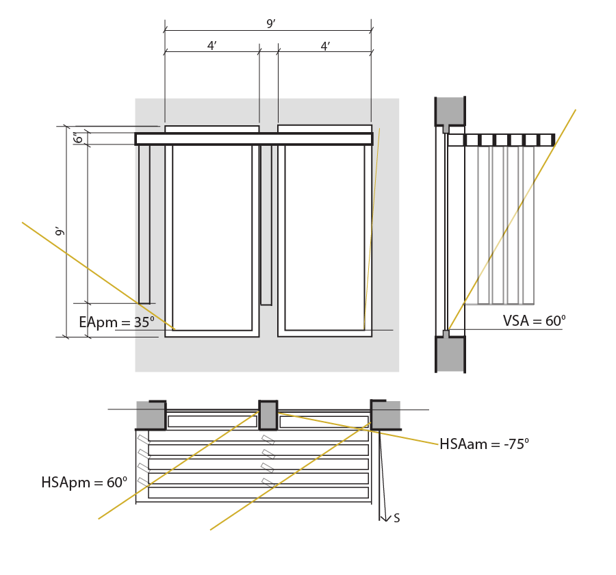

Solar Geometry
University of Texas at Austin, 2012
INFORMATION DESIGN

Solar Geometry & Energy Flow intends to reacquaint the designer with natural sources of light and energy. This project involved redesigning an existing shading strategy in a way that responds to the natural path of the sun at the exact coordinates of the site. The process included surveying the regional and site-specific conditions, redesigning the shading strategy, and analyzing its success.
